CORA
Ratifying Your Recovery.

At a Glance
Impact at a Glance
Survey responses collected from athletes across sport levels
Athlete interviews conducted , individual sessions with injured or recently recovered athletes
Expert physical therapist interviews to validate the clinical side of the solution
Indigo Design Award 2021 , recognizing design excellence in wearable health technology
The Design Challenge
Our Human Factors course gave us two research articles exploring ten psychological human needs: Autonomy, Competence, Relatedness, Self-Actualization, Physical Thriving, Pleasure Stimulation, Money/Luxury, Security, Self-Esteem, and Popularity.
Our challenge was to design a product that meaningfully addresses these needs. Our team of five landed on a topic at the intersection of Physical Thriving and Competence , and an underserved user group: injured athletes.
"Injured athletes get resources for their physical health, but their mental health is not usually considered. Getting injured takes a big toll on an athlete's mental health , and can even delay their physical recovery."
Why This Problem Space
Physical Thriving is tied entirely to positive affect , staying active is a natural antidepressant. Competence is about successfully mastering challenges and feeling capable. An injury strips both at once: an athlete can no longer do what they're built to do, on an unknown timeline. Security collapses too , routines disappear, the return-to-play date is uncertain, and the athlete loses control over their own body.
Our secondary research sharpened this further. Athletes are often reluctant to reveal symptoms , they've been conditioned to push through pain, may see mental health support as weakness, and face cultural pressure to just "play through it." Physicians, meanwhile, tend to focus on physical outcomes and overlook psychological state , even though emotional recovery directly affects physical recovery.

My Role , Interaction Lead
On a team of five , Savannah (Project Lead), Satchel (Product Lead), Taylor (Research Lead), Sullivan (Visual Lead), and me (Interaction Lead) , my ownership was the prototype and the experience of using it.
- Building and iterating all prototype fidelities , lo-fi through high-fi
- Designing the interaction model: how the app flows, how the wearable connects, how real-time data surfaces in context
- Producing the Vision Video , a cinematic walkthrough of the full product experience
- Ensuring every screen reflected our human factors framework: Physical Thriving and Competence embedded in the UX
Research Process
We ran a substantial primary research effort , 100+ survey responses, 7 individual athlete interviews, a group interview with 4 athletes, and 4 expert interviews with physical therapists.
-
Secondary Research
Two clear themes shaped the entire project direction. First, fear of vulnerability: athletes are afraid to reveal symptoms, seeking counseling is often seen as weakness, and athletes are conditioned to work through pain. Second, physician oversight: doctors tend to focus purely on physical outcomes, even though psychological state , including fear and lack of confidence , directly affects return to play.

-
Survey Results
Our 100+ response survey quantified the patterns our secondary research surfaced. 52.5% of athletes said they've been told to play through an injury. 64.6% said they are not scared to reveal an injury , though qualitative context suggested this varied significantly by sport and team culture.
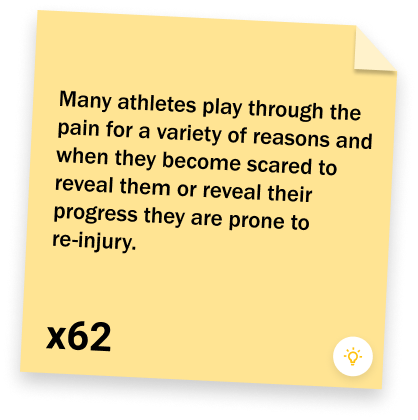
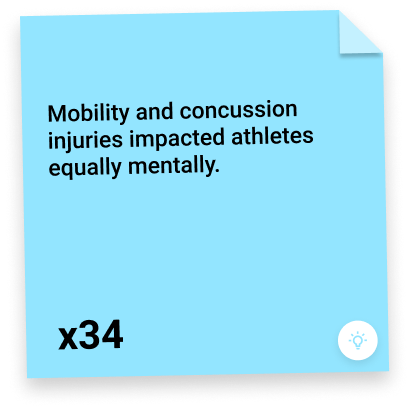
-
How Topic Relates to Human Needs
The research directly mapped to our three focal human needs. Physical Thriving , staying active is a natural antidepressant; injury removes this entirely. Competence , injuries hinder the athlete's ability to perform their sport for an unknown period, directly damaging their sense of capability. Security , injuries are unpredictable, removing routine and structure from the athlete's life.

-
Expert Interviews , Physical Therapists
We interviewed 2 practicing PTs to understand the clinical side and validate our solution direction.
- PTs want better visibility into how athletes are doing between sessions
- Muscle activation data during at-home exercises would be genuinely useful , PTs currently have no way to know if exercises are being done correctly
- Athletes re-aggravating injuries from incorrect form is a real and common problem
- Post-PT survey feedback loops would help PTs adjust plans more responsively
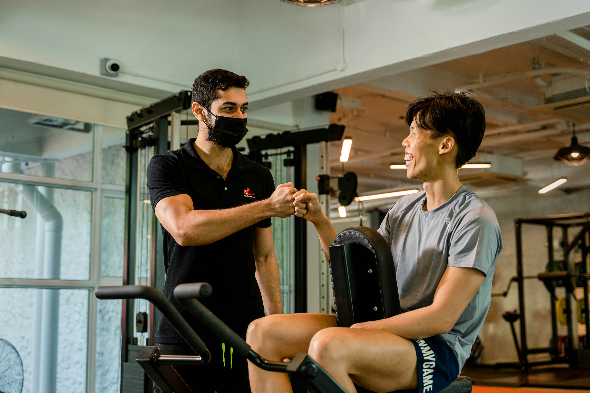
Ideation , Sprint Week
Sprint week was a structured rapid ideation phase where we explored concepts broadly before committing to a direction. Two critical failure scenarios shaped the final concept.
An athlete re-aggravates their injury because they performed an exercise incorrectly at home , no one was there to correct them.
An athlete skips exercises entirely because they don't feel accountable to anyone outside formal PT sessions.
These scenarios pointed toward a product that does two things at once: provides real-time physical guidance during exercise, and maintains a human connection to the care team. That's where the smart sleeve concept emerged.
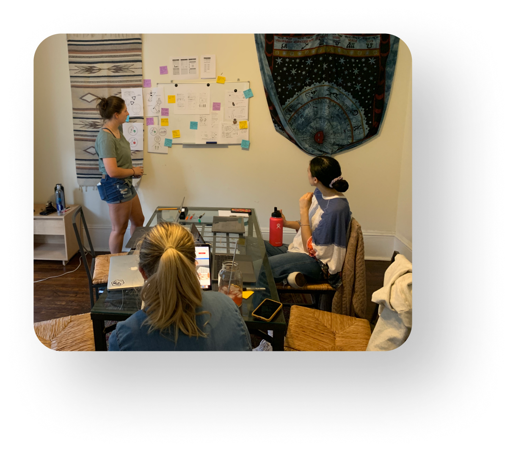
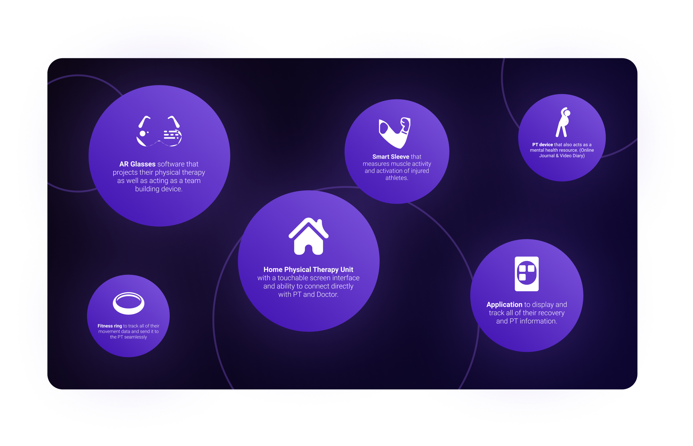
Before building anything, we aligned on what CORA should make athletes feel.
- Feel more in control of their recovery
- Feel empowered in their physical therapy process
- Find comfort in reaching out for mental or physical help
- Trust the process , and trust themselves, their coach, and their PT
Prototyping & Testing , Three Fidelities, Two Test Rounds
As Interaction Lead, prototyping was my core responsibility. We moved through three fidelities , lo-fi, mid-fi, and high-fi , with user testing at the mid-fi and high-fi stages. Each round directly shaped the next iteration.
Lo-Fi , Establishing the Structure
Lo-fi sketches were used internally to align the team on information architecture and core flows before building anything in Framer. Key structural decisions: a bottom nav with three tabs (Home, Physical, Mental), color-coded care team members, and a daily task system driven by the PT's assigned plan.
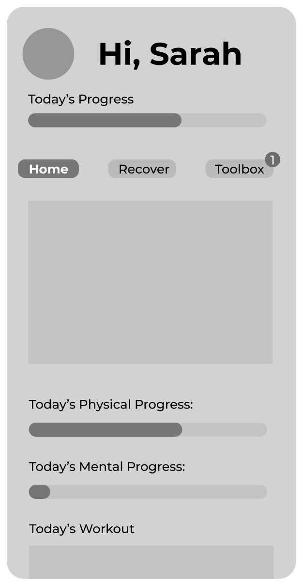
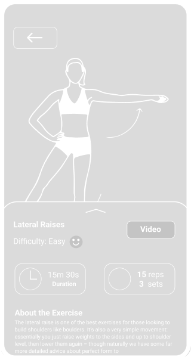
Mid-Fi Prototype , First External Test
The mid-fi was built in Framer and tested with athletes. Key feedback:
- Information architecture and navigation needed improvement , users struggled to orient themselves
- The live exercise screen needed clearer visual hierarchy , muscle activation data was present but not scannable mid-exercise
- Athletes wanted more direct messaging access , the care team felt distant
- The mental health tab felt underbuilt compared to the physical tab
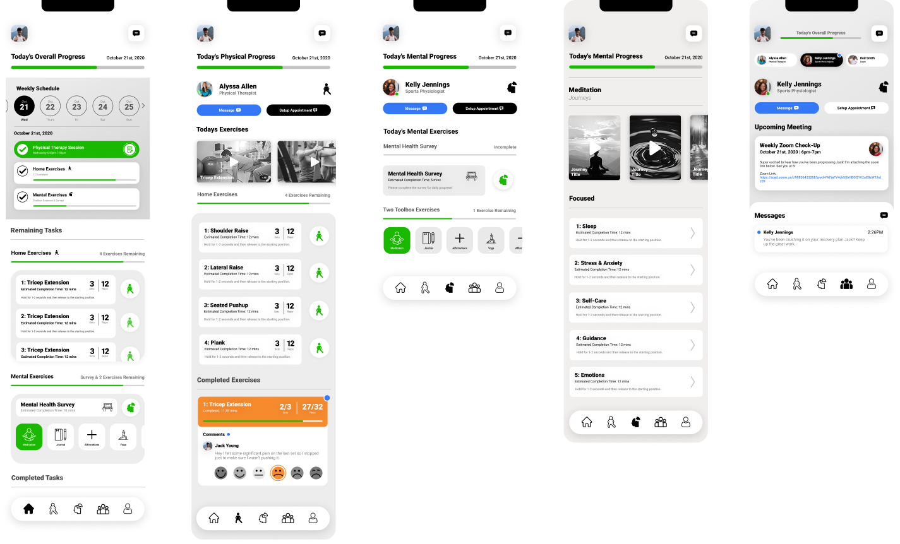
High-Fi , Expert Testing & Final Iteration
The high-fi addressed every mid-fi pain point. Navigation was restructured. The exercise experience was redesigned around the live muscle activation feed with a real-time rep counter and pain scale. The mental tab received a daily survey, goal gradient visualizations, and a resource toolbox.
Expert PT testing confirmed the direction:
- Much improved information architecture and navigation
- "Something that PTs need today" , direct quote from a testing session
- Loved the data visualizations in the physical tab
- Flagged smart sleeve cost as a potential barrier to adoption
- Requested data visualization added to the mental health page , incorporated in the final build
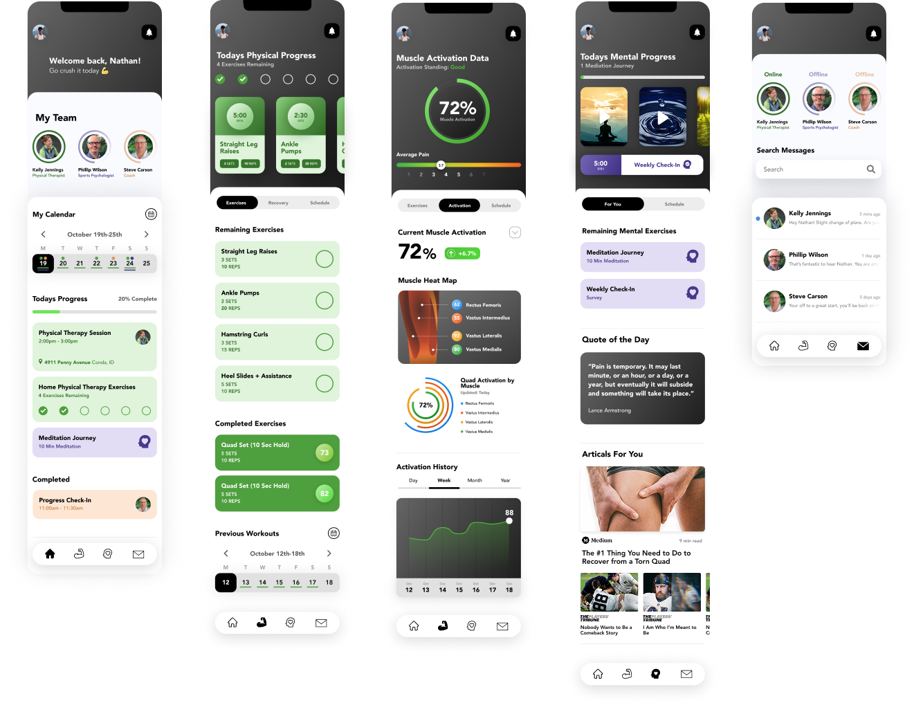
Final Solution , The Complete System
The final CORA system is two products working together: the smart compression sleeve that captures real-time muscle activation data, and the mobile app that surfaces that data to the athlete and their care team.
Home Tab
Color-coded care team calendar (PT = green, Sports Psych = blue, Coach = yellow). Daily task list. Schedule in-person or virtual appointments. Track recovery stage and goals set by PT.
Messages
Direct messaging with PT, Sports Psychologist, and Coach at any time. Care team is always one tap away , reducing the isolation that comes with solo at-home recovery.
Physical Tab
Live muscle activation feed and rep counter from the CORA sleeve during exercises. PT-assigned exercise library. Pain scale feedback loop. Muscle heat map showing individual muscle progress toward recovery goals.
Mental Health Tab
Daily mental check-in survey with data visualization over time. Mental resource toolbox. Goal gradient tracking for mental milestones. Integrated pain scale and trend visualization.
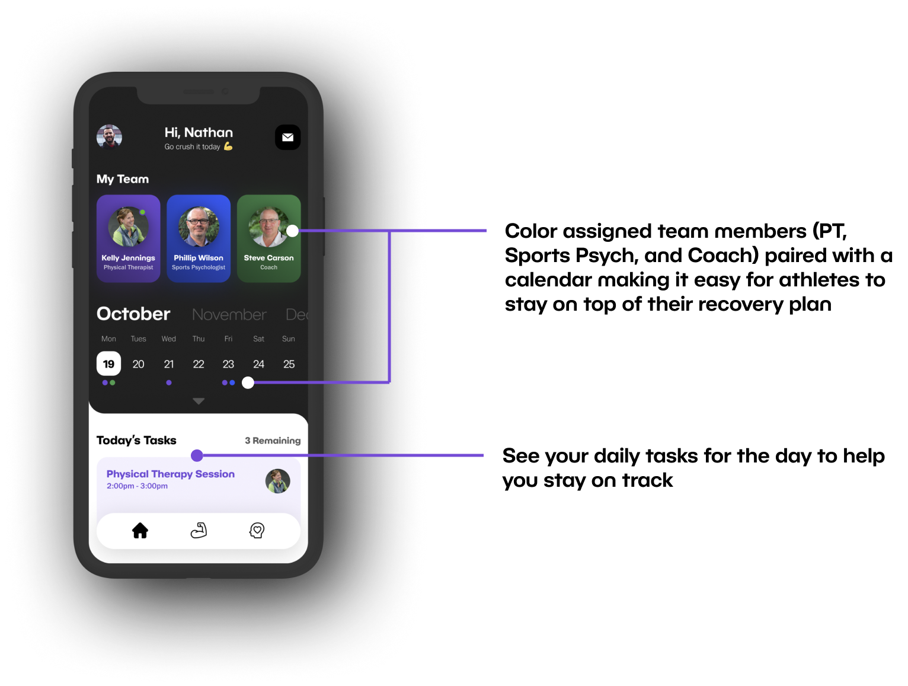

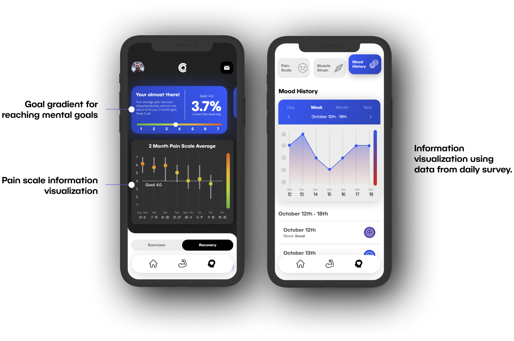
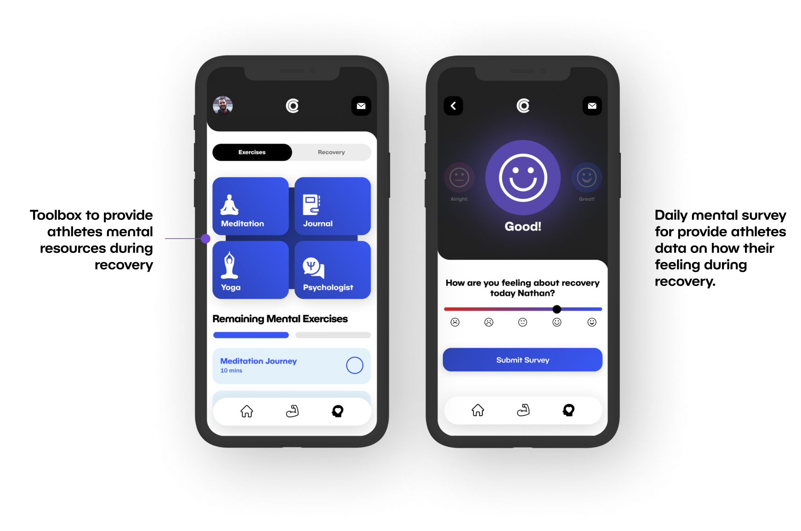
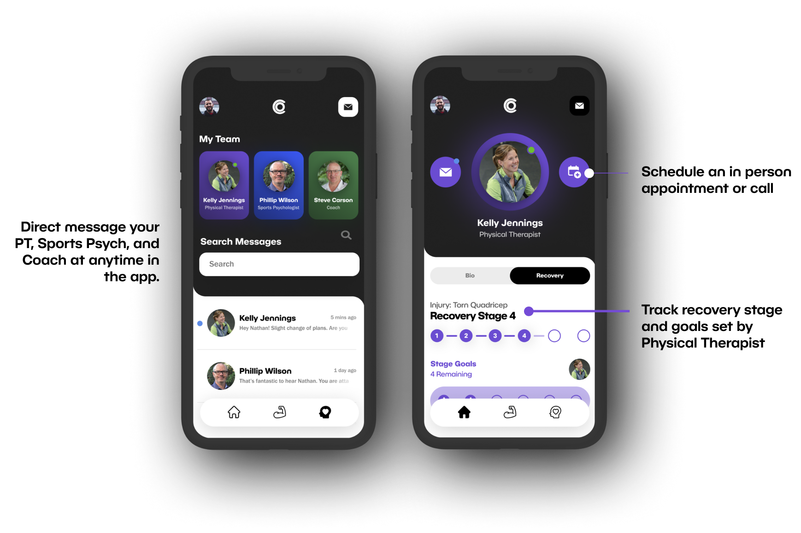
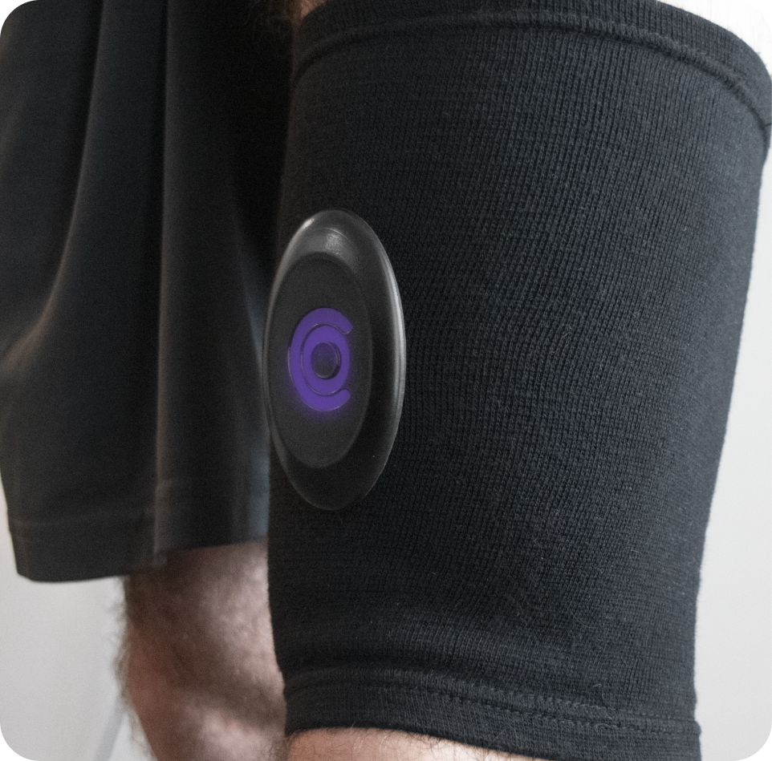
CORA Smart Sleeve , final physical product
Vision Video
As Interaction Lead, producing the Vision Video was one of my key final deliverables. The video was a narrative walkthrough of a real athlete's day , waking up, checking their schedule, completing their first exercise of the week with CORA tracking their form in real time, logging their mental check-in.
The goal was to show judges and stakeholders what CORA felt like in practice , not just what it looked like on screen. This was a design communication artifact as much as a product demo.

CORA Vision Video , watch on YouTube ↗
Visual Design
Sullivan led the visual design. The dark color system , deep navy backgrounds with bright purple accents , was intentional: it evokes the high-performance world of athletics while feeling premium and trustworthy, not sterile or clinical. Color was used functionally too: each care team member has an assigned color in the calendar and throughout the app, making the multi-provider system immediately scannable.
What I Learned
This One Was Personal
I was a student athlete who had to step away from a sport I loved because of injuries. I know exactly what it feels like to lose the physical and mental structure that sport gives you , and to navigate recovery alone, without visibility into your own progress or connection to your care team.
That personal connection made this project feel like more than a class assignment. It made every design decision matter more. When we tested with athletes and heard them say "I wish I had this when I was injured" , that was the real win.
From a craft perspective, CORA pushed me significantly as an interaction designer. Leading the prototype from lo-fi concept sketches through to a polished Framer high-fi , and then translating that into a Vision Video , required me to think about experience design at multiple levels simultaneously: information architecture, micro-interactions, real-time data visualization, and narrative storytelling.
Winning the Indigo Design Award confirmed what the expert PT testing had already told us: the problem was real, the solution was grounded, and the execution was strong.
Let's Connect
I'm always open to thoughtful conversations about design, collaboration, or new opportunities. The best way to reach me is email; I actually read it.